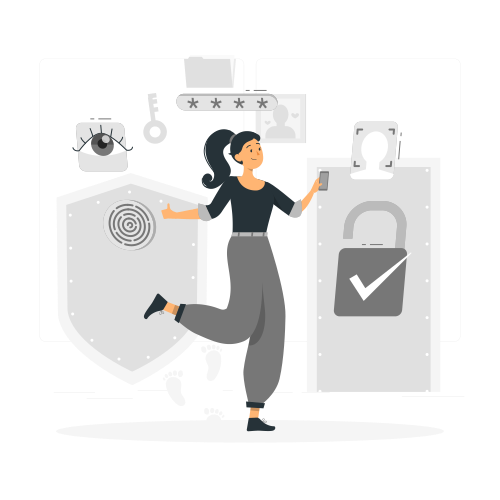
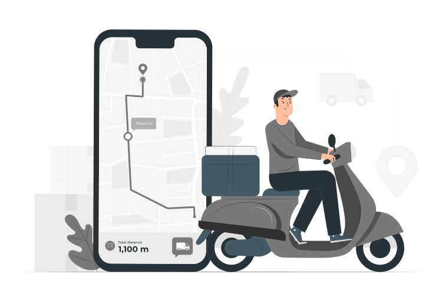

Navegando pelo Mundo das Compras Online
As compras online se tornaram uma parte essencial do nosso estilo de vida moderno. Através da conveniência da Internet, podemos explorar uma infinidade de produtos e serviços sem sair de casa. Neste site, mergulharemos no mundo das compras online, explorando suas vantagens, desafios e como elas transformaram a maneira como fazemos negócios.
Nos últimos anos, as compras online se tornaram cada vez mais populares. A facilidade de acesso, a variedade de produtos disponíveis e a comodidade de fazer compras a qualquer hora do dia ou da noite contribuíram para o seu sucesso. Hoje em dia, é possível encontrar praticamente qualquer coisa online, desde produtos físicos até serviços digitais e experiências únicas.

Uma das principais vantagens das compras online é a conveniência. Os consumidores podem explorar diferentes lojas e comparar preços com apenas alguns cliques, sem precisar percorrer várias lojas físicas. Além disso, as compras online oferecem uma ampla variedade de opções, permitindo que os consumidores encontrem produtos exclusivos ou difíceis de encontrar em suas localidades. A entrega em domicílio e a possibilidade de receber pacotes em qualquer lugar também são vantagens significativas.
Embora as compras online sejam convenientes, é importante abordar as preocupações relacionadas à segurança e proteção do consumidor. Ao fazer compras online, é essencial utilizar sites confiáveis e seguros, verificar as avaliações dos vendedores e ler atentamente as políticas de devolução e garantia. Além disso, proteger informações pessoais, como dados de cartão de crédito, é fundamental para evitar fraudes e roubo de identidade.
As compras online trouxeram uma revolução no modo como consumimos produtos e serviços. Com conveniência, variedade e facilidade de acesso, elas se tornaram uma parte essencial da nossa vida cotidiana. No entanto, é importante estar ciente dos desafios e riscos envolvidos, adotando práticas de compra seguras e informadas.
